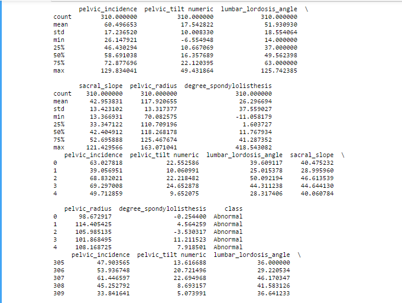
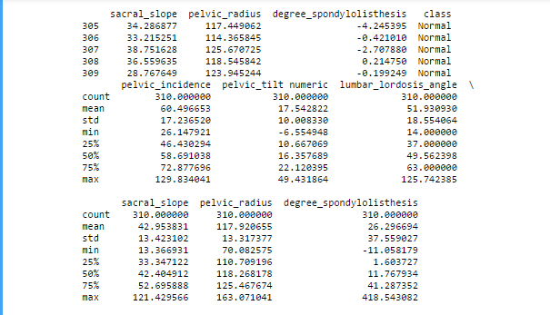
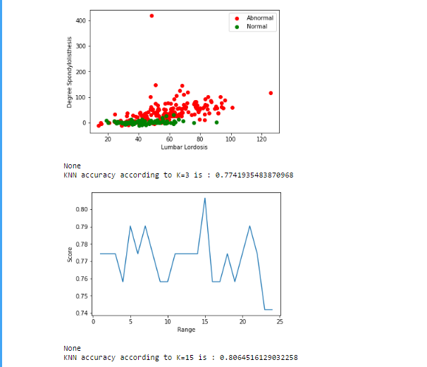

k-nearest neighbor¶
Menjelaskan tentang K-nearest neighbor¶
k-nearest neighbor (k-NN atau KNN) adalah sebuah metode untuk melakukan klasifikasi terhadap objek berdasarkan data pembelajaran yang jaraknya paling dekat dengan objek tersebut. Data pembelajaran diproyeksikan ke ruang berdimensi banyak, dimana masing-masing dimensi merepresentasikan fitur dari data.
Tahapan Langkah Algoritma K-NN¶
- Menentukan parameter k (jumlah tetangga paling dekat).
- Menghitung kuadrat jarak eucliden objek terhadap data training yang diberikan.
- Mengurutkan hasil no 2 secara ascending (berurutan dari nilai tinggi ke rendah)
- Mengumpulkan kategori Y (Klasifikasi nearest neighbor berdasarkan nilai k)
- Dengan menggunakan kategori nearest neighbor yang paling mayoritas maka dapat dipredisikan kategori objek.
Kelebihan dan Kekurangan dari Algoritma K-NN¶
Kelebihan¶
Sangat nonlinear
- kNN merupakan salah satu algoritma (model) pembelajaran mesin yang bersifat nonparametrik.
Mudah dipahami dan diimplementasikan
- Dari paparan yang diberikan dan penjelasan cara menghitung jarak dalam artikel ini, cukup jelas bahwa algoritma kNN mudah dipahami dan juga mudah dimplementasikan. Untuk mengklasifikasi instance x menggunakan kNN, kita cukup mendefinisikan fungsi untuk menghitung jarak antar-instance, menghitung jarak x dengan semua instance lainnya berdasarkan fungsi tersebut, dan menentukan kelas x sebagai kelas yang paling banyak muncul dalam k instance terdekat
Kekurangan¶
Perlu menunjukkan parameter K (jumlah tetangga terdekat)
Tidak menangani nilai hilang (missing value) secara implisit
- Jika terdapat nilai hilang pada satu atau lebih variabel dari suatu instance, perhitungan jarak instance tersebut dengan instance lainnya menjadi tidak terdefinisi.
Sensitif terhadap data pencilan (outlier)
- Seperti yang telah dijelaskan Ali pada artikel sebelumnya, kNN bisa jadi sangat fleksibel jika k kecil.
Rentan terhadap variabel yang non-informatif
Implimentasi¶
"k-nearest neighbor" Data column 2C weka
Mengimpor dan mengumpulkan data¶
import numpy as np # linear algebra
import pandas as pd # data processing, CSV file I/O (e.g. pd.read_csv)
import matplotlib.pyplot as plt #for visualizations
data = pd.read_csv("../input/column_2C_weka.csv")Mengexplor data set dengan menampilkan data yang telah ada¶
print (data.describe())
print (data.head())
print (data.tail())
print (data.describe())mengubah nama kolom kelas karena nama kolom kelas yang sebenarnya membingungkan¶
data.rename(columns={
'class': 'symptom_class'
}, inplace=True)memisahkan kumpulan data menjadi "abnormal" dan "normal" dan visualisasikan untuk melihat distribusinya¶
abnormal = data[data.symptom_class == "Abnormal"]
normal = data[data.symptom_class == "Normal"]
plt.scatter(abnormal.lumbar_lordosis_angle, abnormal.degree_spondylolisthesis, color = "red",label = "Abnormal")
plt.scatter(normal.lumbar_lordosis_angle, normal.degree_spondylolisthesis, color = "green",label = "Normal")
plt.legend()
plt.xlabel("Lumbar Lordosis")
plt.ylabel("Degree Spondylolisthesis")
print (plt.show())Kolom sypmtom_class memiliki dua nilai sebagai Abnormal dan Normal. Ini adalah kolom yang ingin kita gunakan untuk klasifikasi¶
data.symptom_class = [1 if each == "Abnormal" else 0 for each in data.symptom_class]Pisahkan data yang ditetapkan sebagai nilai x dan y. y akan menjadi kolom syptom_class karena kolom ini adalah kolom yang ingin kita gunakan untuk klasifikasi. Sisa kolom akan menjadi x¶
y = data.symptom_class.values
x_ = data.drop(["symptom_class"],axis=1)Sebelum menerapkan algoritma, harus menormalkan nilai x. Normalisasi berarti menskalakan semua nilai antara 0 dan 1. Ini penting untuk tidak mengabaikan nilai-nilai kecil¶
x = (x_ - np.min(x_))/(np.max(x_)-np.min(x_)).valuesUntuk menghitung akurasi algoritma, kita perlu membaginya menjadi data kereta dan uji. Kita akan menggunakan data latih untuk melatih algoritma, dan kemudian menerapkannya pada data uji, untuk mengukur akurasi¶
pfrom sklearn.model_selection import train_test_split
x_train, x_test, y_train, y_test = train_test_split(x, y, test_size=0.2,random_state =42)
membuat model KNN, melatih data kita dan mengujinya.¶
from sklearn.neighbors import KNeighborsClassifier
knn = KNeighborsClassifier(n_neighbors = 3) #set K neighbor as 3
knn.fit(x_train,y_train)
predicted_y = knn.predict(x_test)
print("KNN accuracy according to K=3 is :",knn.score(x_test,y_test))
kita asumsikan K = 3 untuk pertama, Jadi loop yang berulang misalnya 25 kali dan memberikan akurasi pada setiap iteartion. Sehingga kita dapat menemukan nilai K optimal¶
score_array = []
for each in range(1,25):
knn_loop = KNeighborsClassifier(n_neighbors = each) #set K neighbor as 3
knn_loop.fit(x_train,y_train)
score_array.append(knn_loop.score(x_test,y_test))
plt.plot(range(1,25),score_array)
plt.xlabel("Range")
plt.ylabel("Score")
print (plt.show())Seperti yang kita lihat di atas, jika kita menggunakan K = 15, maka kita mendapatkan skor maksimum% 80¶
knn_final = KNeighborsClassifier(n_neighbors = 15) #set K neighbor as 15
knn_final.fit(x_train,y_train)
predicted_y = knn_final.predict(x_test)
print("KNN accuracy according to K=15 is :",knn_final.score(x_test,y_test))

